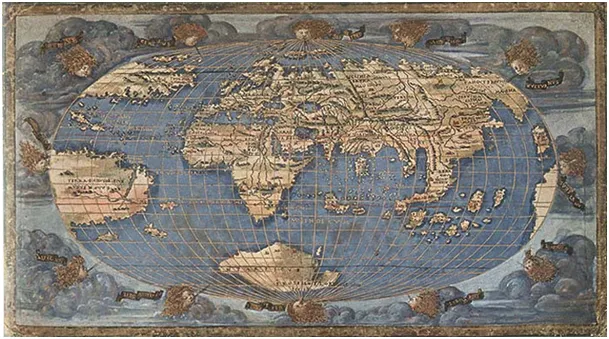
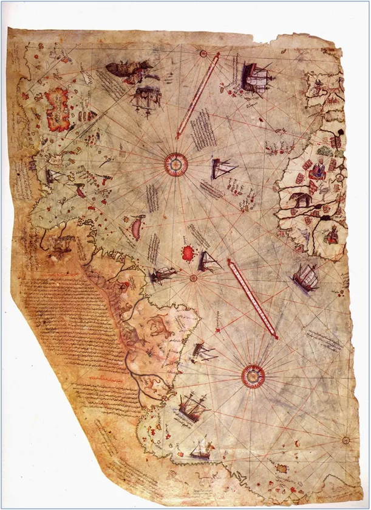
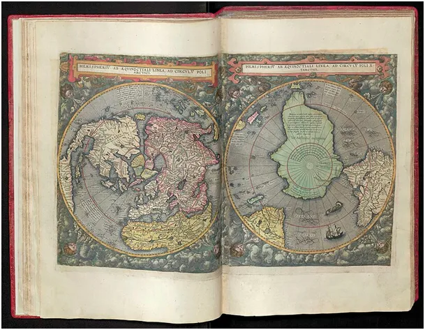

Czy Antarktyda naprawdę istnieje ?
Do 1820 r. odpowiedź na zachodzie brzmiała: "nie". W latach 1819-21 Rosjanie opłynęli kontynent dostarczając wiedzy o jego linii brzegowej. Wcześniej z powodu lodowych barier nie wiedziano, co za polami lodu się kryje. Tak czytamy w naszych podręcznikach, ale czy na pewno?

Biblioteki są pełne map Antarktydy datowanych 300 lat wcześniej. Kilka lat temu rozgorzał spór na poziomie państwowym, w którym to Brytyjczycy zanegowali odkrycia żeglarzy osmańskich. Argument ostateczny rodem z "Misia" brzmiał, "jeśli te mapy są prawdziwe to znaczy, że zostały wymyślone". Doktryna brytyjska jest skrajnie butna i zakłada, że wszytko, co odkrywają Brytyjczycy należy do nich.

Tymczasem setki lat temu arabscy i tureccy żeglarze pływali wokół Afryki i do wybrzeży Ameryki Południowej. Na tureckiej mapie Piri Reisa z 1513 na południe od Ameryki Południowej, za cieśniną Magellana, są oznaczone góry Antarktydy.
Mimo pozornej globalizacji percepcja świata na wschodzie i zachodzie jest bardzo różna. Ahmed Çelebi w 1632 r. rzucił się z Wieży Galata w Stambule i przeleciał 3358 metrów nad Bosforem na lotni własnej konstrukcji. Tak w Azji datowany jest pierwszy lot człowieka. Co ciekawe ten pierwszy lot był zarazem lotem z Europy do Azji. Zachód nie przyjmuje tej wiadomości. "Nie mamy Pana płaszcza i co Pan nam zrobisz?".
Paweł Klimczewski